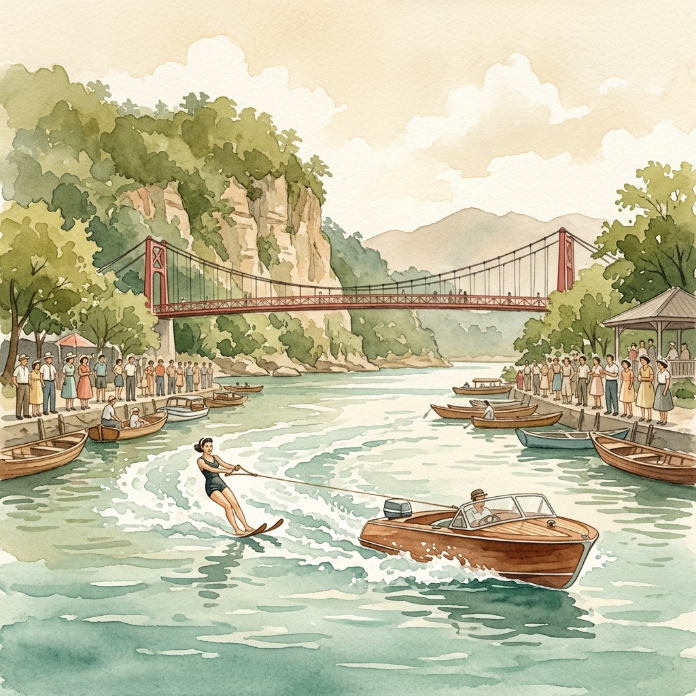

碧潭水上的銀白水花
美國滑水團的黃金記憶
文/淑美
從老師分享舊日收集的檔案有感：民國47年11月是什麼日子？眼見萬頭鑽動往新店碧潭聚集；原來都為觀賞美國巴萊特滑水團12人團隊的水上表演而來~
遊艇以繩索牽繫著表演者，快速的在水面繞行。艇與人滑行過水面，激盪起層層的銀白水花~疊羅漢、向觀眾致敬，更有水上芭蕾---等節目，讓看台上人山人海的觀眾們目不轉睛~為訓練有素的表演者們精湛的演出讚嘆不已~
從演出的影片中，遙想昔日水源之豐沛：寬闊的水面倒映山影疊翠，氣象萬千，難怪博得“小赤壁”美名~
田調記憶｜文/淑美
民國 47 年 11 月，美國巴萊特滑水團在碧潭帶來精湛的演出，萬頭鑽動的盛況引發了極大的轟動。看著那一層層激盪起的銀白水花，也讓人遙想起碧潭昔日水源豐沛、「小赤壁」山影疊翠的開闊與歷史記憶。

文/淑美
從老師分享舊日收集的檔案有感：民國47年11月是什麼日子？眼見萬頭鑽動往新店碧潭聚集；原來都為觀賞美國巴萊特滑水團12人團隊的水上表演而來~
遊艇以繩索牽繫著表演者，快速的在水面繞行。艇與人滑行過水面，激盪起層層的銀白水花~疊羅漢、向觀眾致敬，更有水上芭蕾---等節目，讓看台上人山人海的觀眾們目不轉睛~為訓練有素的表演者們精湛的演出讚嘆不已~
從演出的影片中，遙想昔日水源之豐沛：寬闊的水面倒映山影疊翠，氣象萬千，難怪博得“小赤壁”美名~